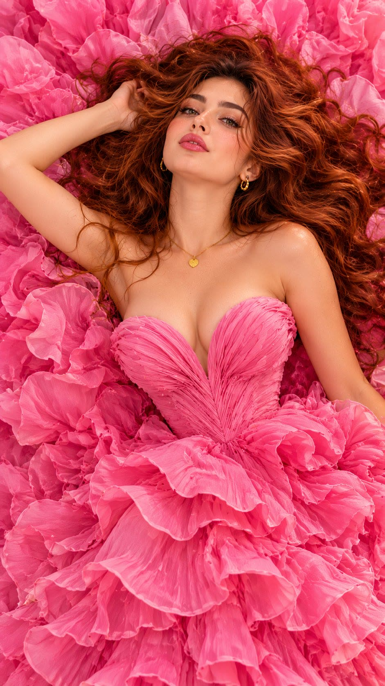

Overhead editorial in a sea of pink ruffles: the gown's fabric fans out across the whole frame
WRD-102Wardrobeunknownby @sabzar_Ai2026-11-24

Top-down fashion still where the garment becomes the set: an enormous sculptural sea of ruffled pink fabric radiates around the model. Includes fabric, lighting and camera blocks (50mm, f/4, overhead, centred, face in the upper third).
Prompt
Ultra-detailed, high-fashion editorial photograph shot from a high overhead angle, of a young woman lying on her back, surrounded by an enormous, sculptural sea of ruffled pink fabric that fans out in every direction like giant petals. Her head is tilted slightly, with a soft, sultry, direct gaze and a relaxed, dreamy expression. She has long, voluminous, tousled auburn-copper hair with rich red-brown tones and loose waves spread out around her head and shoulders, glowing warm skin with a natural rosy flush, light freckles across the nose and cheeks, soft green-hazel eyes, defined natural brows, and glossy rose-pink lips. She wears small gold hoop earrings and a delicate gold pendant necklace. She wears a strapless, sweetheart-neckline couture gown in bubblegum-to-rose pink, with a finely pleated, sunburst-style bodice radiating from a deep V at the center, a fitted waist, and a skirt that explodes into layer upon layer of huge, ruffled, ruched petal-like tiers with crinkled organza or silk-chiffon edges. The ruffles extend to every edge of the frame and blend with the surrounding fabric so that she seems to be nestled in the center of a giant pink flower. Lighting and style: soft, diffused, even daylight with gentle highlights on the ruffle ridges and soft shadows in the folds, monochromatic palette of blush, rose, bubblegum, and hot pink contrasted with warm copper hair, haute couture and Barbiecore aesthetic, surreal flower-bloom concept, fashion-magazine cover look, photorealistic, hyper-detailed fabric pleating, translucent chiffon edges, individual hair strands, skin texture with light freckles, 8k, HDR, sharp focus on face and bodice Camera settings: 50mm lens, f/4, top-down overhead angle, centered symmetrical composition with the face in the upper third, vertical 9:16 aspect ratio, studio-quality natural light, high-end editorial campaign look
Tags: overhead, ruffles, fabric as set, pink, fashion editorial, symmetry